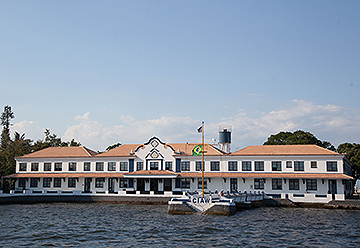

O CIAW foi fundado em 17 de dezembro de 1945, ao final da Segunda Guerra Mundial, um momento em que as Forças Armadas brasileiras buscavam modernizar sua estrutura e formação técnica. A criação do CIAW atendeu à necessidade urgente de treinar oficiais especializados para operar e manter os equipamentos modernos que começavam a fazer parte da Marinha do Brasil.
O centro foi batizado em homenagem ao Almirante Eduardo Wandenkolk, um importante militar e político brasileiro que se destacou no século XIX por sua atuação na profissionalização das Forças Armadas e por seu apoio à República.
O CIAW está situado na Ilha das Enxadas, na Baía de Guanabara, Rio de Janeiro. A localização é estratégica por sua proximidade com outras bases navais e centros de comando da Marinha, além de oferecer um ambiente controlado ideal para o treinamento intensivo de militares.
O Curso de Formação de Oficiais (CFO) oferecido no CIAW é um dos mais prestigiados do país no âmbito militar. Nele, engenheiros e outros profissionais formados em universidades civis ingressam na carreira militar, passando por:
Treinamento físico e militar;
Disciplina e hierarquia naval;
Ensino técnico específico à Marinha (engenharia, eletrônica, armamento, navegação, etc.).
Ao final do curso, os formandos são declarados Primeiro-Tenentes e seguem carreira militar com possibilidades de especialização, comando e atuação em projetos estratégicos.
